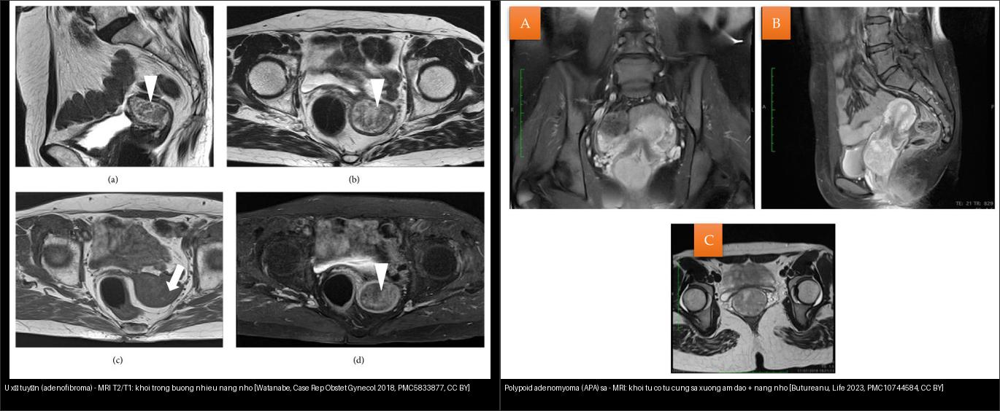
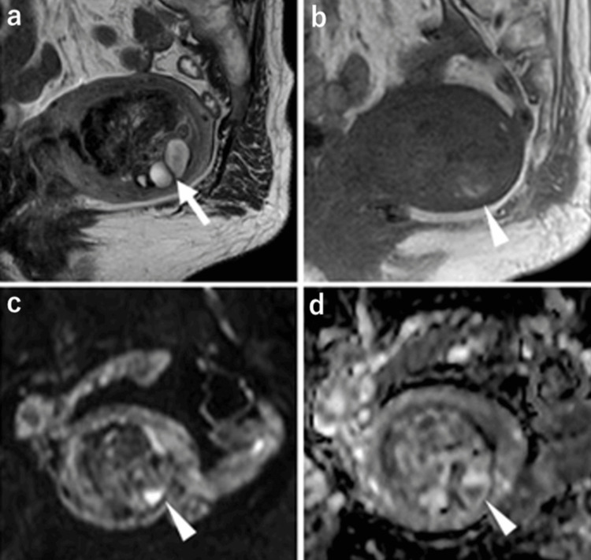
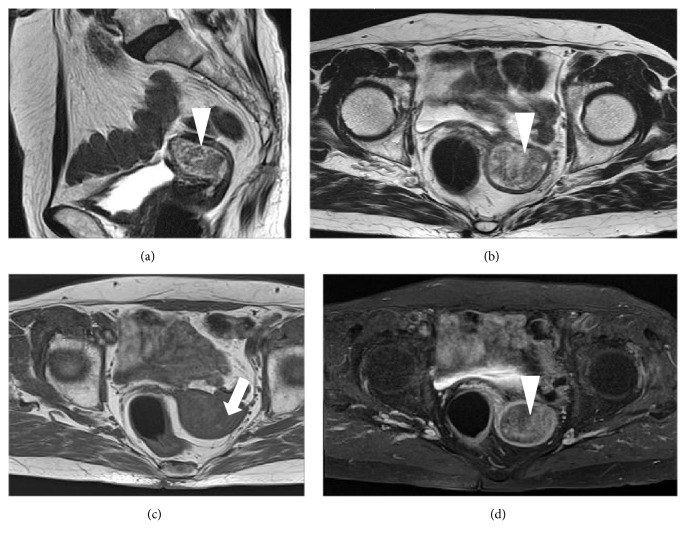
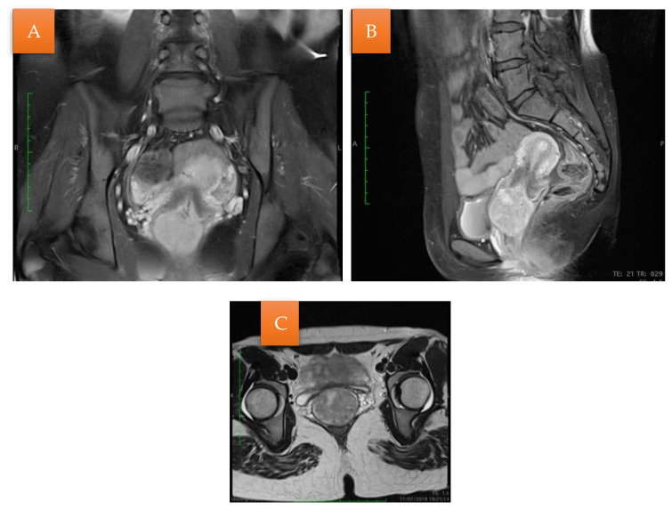
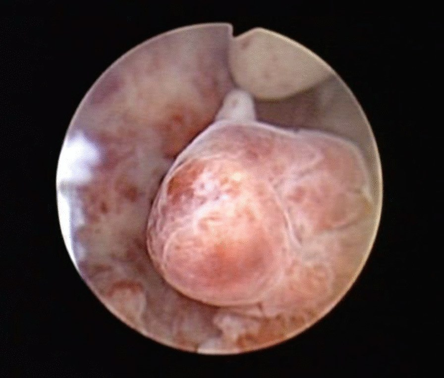
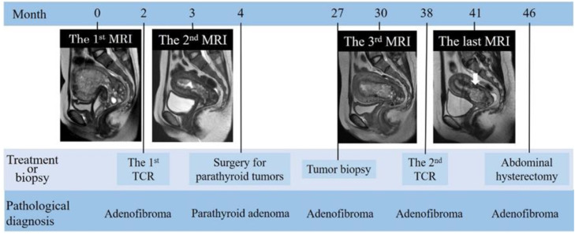
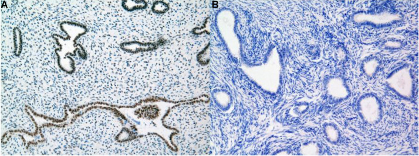

541 — U xơ tuyến tử cung (adenofibroma) & polypoid adenomyoma: "kẻ giả danh lành" phía dưới adenosarcoma / Uterine adenofibroma & atypical polypoid adenomyoma
Tags: pattern:khoi-long-tu-cung pattern:u-gia-lanh vung:tu-cung score:ADC protocol:MRI-tieu-khung protocol:soi-buong-tu-cung
Mức chắc chắn (certainty): tổng hợp y văn (literature synthesis) — nhóm tự biên từ nhiều ca nguyên văn có ảnh mở CC BY / CC BY-NC-ND (Cureus 2026; Case Rep Obstet Gynecol 2018; BMC Womens Health 2022; Life 2023; Radiol Case Rep 2026; J Midlife Health 2025) + meta-analysis APA (Medicine 2020); số liệu đối chiếu từng bài gốc, không gắn một ca đơn lẻ duy nhất.
1. Tổng quan bệnh học – cơ chế hình ảnh
- Vấn đề lâm sàng: đây là đầu LÀNH của phổ hỗn hợp biểu mô–trung mô của tử cung: adenofibroma (biểu mô lành + mô đệm lành) → adenosarcoma (biểu mô lành + mô đệm ÁC) → carcinosarcoma (cả hai ác). Bệnh nhân thường ra máu sau mãn kinh hoặc có polyp tái phát nhiều lần, hình ảnh chỉ thấy "một khối polypoid trong lòng tử cung" nên rất dễ bị chốt là polyp lành rồi cắt qua nội soi mà bỏ sót adenosarcoma. Ngược lại, u lành cũng bị gọi nhầm là ác → cắt tử cung oan ở người còn muốn sinh con.
- Bệnh học adenofibroma: u hỗn hợp biểu mô–trung mô LÀNH, cực kỳ hiếm; biểu mô = tuyến kiểu nội mạc lành, mô đệm = nguyên bào sợi lành, mật độ thấp, KHÔNG atypia và KHÔNG thấy hình chia (mitotic figures) (Kaur 2025); có thể có dị sản vảy (squamous metaplasia) lan rộng (Kaizu 2026). Ca 75 tuổi (Watanabe 2018): u có nhú (papillae) với lõi mô đệm, đại thể u thoái hóa/hoại tử xám trắng ~4 × 2,5 cm.
- Cảnh báo phân loại: WHO ấn bản 5 đã BỎ adenofibroma như một thực thể riêng vì chồng lấp chẩn đoán với adenosarcoma độ thấp và polyp lành (Nakai 2026; Kaur 2025). Vì vậy "adenofibroma" trên giải trình tự chỉ nên xem là chẩn đoán mô bệnh loại trừ, phải cắt trọn tổn thương + xem kỹ số hình chia và atypia mô đệm.
- Không "lành tuyệt đối": adenofibroma đã được ghi nhận xâm lấn cơ tử cung – tĩnh mạch chậu, tái phát và di căn (hiếm) → không dùng chữ "lành" để ngừng theo dõi (Kaur 2025).
- Bệnh học atypical polypoid adenomyoma (APA): u hai pha gồm tuyến nội mạc điển hình/biến đổi kiến trúc + mô đệm cơ–sợi (fibromyomatous stroma), có thể có dị sản vảy dạng ngọc (squamous morular metaplasia); gặp chủ yếu ở nữ tuổi sinh sản, vô sinh (Wang 2022; Butureanu 2023).
- Nguy cơ thật (định lượng — Biasioli 2020, gộp 46 nghiên cứu/296 ca): tái phát 44% (KTC 95% 33–57%), thấp hơn khi cắt qua nội soi buồng tử cung 22% (11–39%) so với nạo/cắt polyp mù 38% (15–67%); ung thư nội mạc kèm theo/trong theo dõi 16% (9–29%); tích lũy 5 năm chẩn đoán ung thư mới 10,56% (nội soi) vs 35,5% (nạo mù).
- Ngưỡng xử trí (Wang 2022, 44 ca): tổn thương trong buồng > 1 cm → phương pháp "4 bước" qua nội soi + chẩn đoán mô bệnh; > 30% tuyến bề mặt có cấu trúc phức tạp (phân nhánh/nảy chồi) hoặc kèm tăng sinh nội mạc = chỉ định cắt tử cung. Phân độ APA-L (36) / APA-H (8) theo mức bất thường tuyến bề mặt.
- TẠI SAO hình ảnh trông như vậy (vật lý + mô bệnh):
- Khe tuyến giãn nang nằm trong mô đệm đặc → trên T2W khối có "đốm/đảo tăng tín hiệu không đồng nhất" (punctate heterogeneous hyperintensity, islands of iso-to-hypointensity) — nang nhỏ T2 rất sáng; ca Nakai 2026 thấy nhiều nang trong u (95 × 54 × 78 mm).
- Xuất huyết/hoại tử nhỏ trong u → ổ T1 sáng (methemoglobin) — gặp ở cả hai ca kinh điển (Watanabe 2018; Kaizu 2026).
- Mô đệm sợi LÀNH, thưa tế bào, giàu collagen → ngấm thuốc ít/không đặc hiệu (Watanabe 2018: "a little enhancement") nhưng ca có dị sản vảy lan rộng lại ngấm bề mặt mạnh + ngấm tăng dần ở thì muộn dạng nhú (Kaizu 2026) → ngấm không giúp loại ác.
- DWI/ADC KHÔNG phải ranh giới tuyệt đối giữa lành và ác: ca 84 tuổi có ADC CAO ở thành phần đặc (Kaizu 2026) nhưng ca HPT-JT lại có ADC thấp 1,26 ×10⁻³ mm²/s (Nakai 2026) — trùng khít giá trị 1,26 của adenosarcoma trong bài 519. Bài học: ADC một mình không loại trừ adenosarcoma; chốt cuối là mô bệnh (hình chia + atypia mô đệm).
2. Mẫu hình + chẩn đoán phân biệt (gamut)
- Ba câu hỏi gỡ rối một "khối polypoid trong lòng tử cung":
- Bối cảnh: nữ tuổi sinh sản vô sinh/rong kinh (nghiêng APA) hay ra máu sau mãn kinh (nghiêng adenofibroma/adenosarcoma/ung thư)?
- Có "nhú" và "nang nhỏ" không? (adenofibroma/adenosarcoma có nhú + nang; polyp thường đồng nhất).
- Có tái phát nhiều lần / kèm bệnh nội tiết không? (APA tái phát 44%; adenofibroma tái phát ở người trẻ → nghĩ hội chứng HPT-JT).
- Gamut theo bản chất (từ lành → ác) cùng vị trí lòng tử cung:
- Lành: adenofibroma, APA, polyp nội mạc (kể cả polyp khổng lồ 4–12 cm, phần lớn lành), u xơ dưới niêm mạc (FIGO 0–2), polypoid adenomyoma.
- Ác / tiền ác: adenosarcoma (biểu mô lành + mô đệm ác), carcinosarcoma, ung thư nội mạc thể polypoid, tăng sinh nội mạc có atypia.
- Đặc trưng hình ảnh từng thực thể (định lượng):
- Adenofibroma: khối trong buồng có nhú + nhiều nang nhỏ, T2 không đồng nhất, T1 có ổ sáng (xuất huyết), ngấm ít→có thể ngấm nhú tăng dần; DWI/ADC không định hướng (có thể ADC cao HOẶC thấp); hay lan xuống ống cổ/âm đạo khi lớn (Nakai 2026).
- APA: khối trong buồng hoặc sa xuống cổ/âm đạo, có nang nhỏ, siêu âm khối tăng âm trong buồng ~1,7 × 1,2 cm (Wang 2022); soi buồng: khối bờ không đều, mặt sần (Wang 2022); MRI ca sa: khối từ ngang cổ tử cung 4,7 cm, có ổ nang nhỏ (Butureanu 2023).
- Polyp nội mạc: bờ rõ, đồng nhất, cuống mạch đơn độc (pedicle artery), ADC không thấp.
- U xơ dưới niêm mạc: T2 tối, vỏ giả, không nang/nhú, điển hình bởi bờ rõ + mạch bao.
- Adenosarcoma/ung thư nội mạc: khối lớn (~6,5 cm), không đồng nhất, xâm lấn cơ, DWI hạn chế thật, ngấm không đồng nhất; tái phát sau cắt "polyp" (bài 519).
3. Bảng so sánh phân biệt (ma trận đối chiếu)
| Thực thể (entity) | Hình ảnh điển hình | Chốt vào (rule-in) | Chốt loại (rule-out) | Gợi ý xác nhận |
|---|---|---|---|---|
| Adenofibroma | Khối polypoid trong buồng có nhú + nhiều nang nhỏ, T2 không đồng nhất, ổ T1 sáng; có thể lan ống cổ/âm đạo | Nhú + nang nhỏ + mô bệnh KHÔNG hình chia/không atypia | Không loại được bằng hình ảnh (ADC có thể cao hoặc thấp) → không thể "chốt loại" adenosarcoma bằng DWI | Cắt trọn qua nội soi + mô bệnh (số hình chia/atypia); IHC parafibromin nếu trẻ/tái phát |
| APA (atypical polypoid adenomyoma) | Khối trong buồng/sa cổ–âm đạo, nang nhỏ, mặt sần; nữ tuổi sinh sản vô sinh | Tuổi sinh sản + vô sinh/rong kinh + nang nhỏ + mô bệnh hai pha (tuyến + đệm cơ–sợi) | Xâm lấn cơ sâu + DWI hạn chế mạnh → nghi ác | "4 bước" qua nội soi khi tổn thương > 1 cm; theo dõi nội soi định kỳ |
| Polyp nội mạc lành | Bầu dục bờ rõ, đồng nhất, cuống mạch đơn độc | Cuống mạch đơn độc + bờ rõ + đồng nhất + ADC không thấp | Có nhú/nang nhỏ + DWI hạn chế → nghi adenofibroma/adenosarcoma | Soi buồng + cắt polyp; mô bệnh |
| Adenosarcoma (loại trừ chính) | Khối lớn (~6,5 cm) không đồng nhất, nang nhỏ T2 sáng, DWI hạn chế thật, có thể xâm lấn cơ, lan ống cổ | Khối lớn không đồng nhất + nang nhỏ + DWI hạn chế thật (ADC thấp) ở nữ ra máu sau mãn kinh | Bờ đẩy rõ + không xâm lấn + mô đệm không atypia → nghiêng lành | Mô bệnh bắt buộc (biểu mô lành + mô đệm ÁC; SO > 25%) — bài 519 |
| U xơ dưới niêm mạc (FIGO 0–2) | Khối đặc T2 tối đồng nhất, vỏ giả, không nang/nhú | T2 tối đều + vỏ giả + không hạn chế khuếch tán | T2 sáng không đồng nhất + nhú/nang → nghi adenofibroma/adenosarcoma | MRI; soi buồng; so phim cũ (bài 520/542) |
| Ung thư nội mạc thể polypoid | Khối nội mạc bờ không đều, xâm lấn cơ, DWI hạn chế | Xâm lấn cơ + bờ không đều + DWI hạn chế | Bờ đẩy rõ không xâm lấn → nghiêng lành | Sinh thiết nội mạc + MRI phân giai đoạn (bài 525) |
| HPT-JT (bối cảnh, không phải u) | U tử cung tái phát nhiều lần ở người TRẺ + tăng calci máu/tăng PTH + u xương hàm + nang thận | U tử cung tái phát ở tuổi trẻ + tăng PTH nguyên phát + mất bộc lộ parafibromin | Parafibromin còn bộc lộ → không phải HPT-JT | IHC parafibromin; gen HRPT2/CDC73; tầm soát tuyến cận giáp–hàm–thận |

Trái: adenofibroma — MRI (a) T2 dọc và (b) T2 ngang: khối trong buồng tử cung có nhú, nhiều nang nhỏ (mũi tên), T1 giảm tín hiệu kèm ổ sáng nghi xuất huyết (mũi tên), ngấm thuốc ít (d). Phải: polypoid adenomyoma (APA) sa — MRI khối xuất phát từ ngang cổ tử cung sa xuống âm đạo, có ổ nang nhỏ. Cả hai đều lành nhưng mô bệnh mới phân định được. Nguồn: Watanabe H et al., Case Rep Obstet Gynecol 2018 (PMC5833877, CC BY) + Butureanu T et al., Life 2023 (PMC10744584, CC BY). Ảnh ghép letterbox, giữ nguyên tỷ lệ.Dấu hiệu chốt then chốt
- "Nhú + nang nhỏ trong khối polypoid" là dấu hình ảnh gợi ý adenofibroma/adenosarcoma — khác polyp thường (đồng nhất) và u xơ (T2 tối đều).
- Mô bệnh là chốt duy nhất: adenofibroma = KHÔNG hình chia + KHÔNG atypia tế bào (Kaur 2025); adenosarcoma = mô đệm tăng sinh + atypia ± hình chia, phân biệt bằng hình thái tế bào và chỉ số hình chia — adenosarcoma biệt hóa cao vẫn bị đọc nhầm thành adenofibroma (Kaur 2025).
- Tái phát nhiều lần ở người trẻ = tín hiệu hệ thống: ca 21 tuổi tái phát u tử cung nhiều lần + cận giáp nguyên phát → HPT-JT; mất bộc lộ parafibromin khẳng định đột biến HRPT2/CDC73 (Nakai 2026).
4. Protocol chụp + xử trí
- Siêu âm đầu tay (TVUS ± Doppler): khối trong buồng; cuống mạch đơn độc gợi ý polyp; nhiều nang nhỏ trong khối gợi ý adenofibroma/APA (Watanabe 2018; Wang 2022).
- MRI tiểu khung (đánh giá bản chất + xâm lấn + lan):
- T2W ≥ 2 bình diện: nhú, nang nhỏ, vùng chuyển tiếp, xâm lấn cơ, lan ống cổ.
- T1W (± fat-sat): ổ T1 sáng = xuất huyết.
- DWI b = 800–1.000 + ADC: hạn chế không loại được adenosarcoma một mình — đo tại mô đặc còn sống, cảnh giác nang/hoại tử gây ADC thấp giả.
- T1W + Gd động học (DCE) + tái tạo 3D T1 mỏng: đánh giá ngấm bề mặt dạng nhú và ngấm tăng dần thì muộn (dấu của ca 84 tuổi có dị sản vảy).
- Soi buồng tử cung + cắt TRỌN tổn thương (tiêu chuẩn vàng): không sinh thiết nhỏ rồi dừng; APA > 1 cm dùng phương pháp "4 bước" (Wang 2022); cắt qua nội soi giảm tái phát 44% → 22% và phát hiện ung thư kèm theo tốt hơn nạo mù (Biasioli 2020).
- Xử trí theo mô bệnh: adenofibroma/APA → bảo tồn sinh sản bằng cắt qua nội soi + theo dõi nội soi định kỳ; > 30% tuyến phức tạp/kèm tăng sinh nội mạc = cắt tử cung (Wang 2022). Nghi adenosarcoma → mô nguyên khối (bài 519).
- Tầm soát hệ thống: người trẻ + u tái phát nhiều lần → định lượng calci/PTH, khám xương hàm, siêu âm thận để tìm HPT-JT (HRPT2/CDC73) (Nakai 2026).
flowchart TD
A[Khoi polypoid trong long tu cung] --> B{Doppler: cuong mach don doc<br/>+ bo ro + dong nhat?}
B -->|Co| C[Polyp noi mac: cat qua noi soi + mo benh]
B -->|Khong| D{Co nhu + nhieu nang nho T2 sang?}
D -->|Khong| E{Khoi T2 toi deu + vo gia?}
E -->|Co| F[U xo duoi niem mac FIGO 0-2: so phim cu, xu tri theo 542]
E -->|Khong| G[Xam lan co + bo khong deu?]
G -->|Co| H[Nghi AC: sinh thiet + MRI phan giai doan, mô NGUYEN KHOI]
G -->|Khong| I[Khoi dac khac: danh gia tiep]
D -->|Co| J{Tuoi sinh san + vo sinh/rong kinh?}
J -->|Co| K[APA: 4 buoc qua noi soi khi > 1 cm; > 30% tuyen phuc tap = cat tu cung]
J -->|Khong, sau man kinh| L["Adenofibroma vs adenosarcoma: cat TRON + mo benh<br/>(hinh chia + atypia mo dem)"]
L --> M{Tre + tai phat nhieu lan?}
M -->|Co| N[Do calci/PTH + IHC parafibromin -> HPT-JT HRPT2/CDC73]
M -->|Khong| O[Theo doi noi soi dinh ky]
5. Biến thể bình thường và cạm bẫy
- ADC không phân định lành–ác: ca adenofibroma (HPT-JT) có ADC 1,26 ×10⁻³ mm²/s — trùng giá trị của adenosarcoma trong bài 519; ca khác lại ADC cao. → Đừng chốt "ADC cao = lành" hay "ADC thấp = ác" cho nhóm polypoid trong buồng.
- "Adenofibroma" có thể là chẩn đoán sai: WHO 5 đã bỏ thực thể này; adenosarcoma độ thấp có thể bị đọc thành adenofibroma → luôn xem mô bệnh kỹ + hội chẩn giải phẫu bệnh.
- Kích thước lớn không đồng nghĩa ác: polyp nội mạc khổng lồ 4–12 cm phần lớn vẫn lành — phải dựa vào bờ/mô bệnh (bài 519).
- APA "lành" nhưng hay tái phát & kèm ung thư: tái phát 44%, ung thư nội mạc kèm theo 16% → theo dõi nội soi + sinh thiết nội mạc định kỳ, không dừng sau một lần cắt.
- Satisfaction of search: khi thấy khối trong buồng, quét toàn bộ cơ tử cung + ống cổ (ca Nakai 2026 u lan tới âm đạo; ca Kaizu 2026 có khối kèm trong cơ ở bài 519).
- Đừng bỏ qua đầu mối hệ thống: u tử cung tái phát ở người trẻ + tăng calci/tăng PTH + u xương hàm = phải nghĩ HPT-JT, vì tầm soát cận giáp–thận–hàm thay đổi tiên lượng.
- Ưu tiên đường tiếp cận: u dưới niêm mạc/trong buồng nghi lành → cắt qua nội soi (bảo tồn sinh sản, ít dính buồng); nghi ác → không cắt nhỏ/mổ nội soi nguyên khối để tránh gieo rắc (bài 518).
6. Tự lượng giá — Blind Quiz ngay trên trang tĩnh
Ca 1 — Nữ 84 tuổi, ra máu sinh dục; siêu âm + MRI có khối trong buồng tử cung. Nhìn phim, mô tả trước.

- Gợi ý lâm sàng (clinical context): nữ 84 tuổi, chảy máu sinh dục, u buồng tử cung trên hình ảnh.
- Câu hỏi: (a) T2 có gì trong khối? (b) T1 (b) có dấu hiệu nào? (c) DWI (c) và ADC (d) nói gì — vì sao không được kết luận ác/lành chỉ bằng DWI?
Bấm để hiện đáp án (findings + chẩn đoán)
- Dấu hiệu (findings): (a) T2 dọc — khối chiếm buồng tử cung, không đồng nhất, giảm tín hiệu so với cơ, có nhiều ổ tăng tín hiệu = nang (mũi tên); (b) T1 — khối đồng tín hiệu với cơ + ổ sáng nhỏ nghi xuất huyết (mũi tên đầu); (c) DWI b = 1000 — thành phần đặc tín hiệu thấp; (d) ADC CAO ở thành phần đặc (trừ ổ xuất huyết) = không hạn chế khuếch tán thật.
- Chẩn đoán (diagnosis): adenofibroma tử cung có dị sản vảy (squamous metaplasia) — mô bệnh: nhú bề mặt + nang, tuyến kiểu nội mạc + mô đệm nguyên bào sợi KHÔNG atypia. Điểm đáng nhớ: ca này ADC cao → hình ảnh KHÔNG loại trừ adenosarcoma, phải có mô bệnh.
- Nguồn ảnh: Kaizu A et al., Cureus 2026, PMC13129567, Fig 2, CC BY 4.0.
Ca 2 — Nữ 75 tuổi, không triệu chứng, có "polyp" tử cung; MRI + soi buồng tử cung mềm. Nhìn phim, mô tả trước.

- Gợi ý lâm sàng: nữ 75 tuổi, polyp tử cung, không triệu chứng.
- Câu hỏi: (a,b) T2 có dạng tín hiệu gì đặc trưng? (c) T1 có gì bất thường? (d) Ngấm thuốc ra sao? Chẩn đoán phân biệt?
Bấm để hiện đáp án (findings + chẩn đoán)
- Dấu hiệu (findings): (a) T2 dọc và (b) T2 ngang — khối trong buồng tử cung "đốm/đảo" tăng tín hiệu không đồng nhất (nang nhỏ lẫn đảo đồng–giảm tín hiệu); (c) T1 ngang — tổn thương giảm tín hiệu kèm ổ tăng tín hiệu khu trú (nghi xuất huyết); (d) T1 sau tiêm — ngấm thuốc RẤT ÍT.
- Chẩn đoán (diagnosis): adenofibroma tử cung — mô bệnh: tăng sinh hai pha LÀNH (tuyến nội mạc lành + mô đệm nguyên bào sợi, rất ít hình chia). Soi buồng: polyp đỏ–vàng–trắng, mặt "đá cuội" xếp lớp, dễ biến dạng theo dịch bơm — gợi ý nhưng không chốt được.
- Nguồn ảnh: Watanabe H et al., Case Rep Obstet Gynecol 2018, PMC5833877, Fig 2, CC BY.
Ca 3 — Nữ 21 tuổi, khối sa xuống âm đạo gây chảy máu. Nhìn phim, mô tả trước.

- Gợi ý lâm sàng: nữ 21 tuổi, khối chảy máu chiếm âm đạo 4,7 × 4,5 cm.
- Câu hỏi: khối xuất phát từ đâu? Có dấu hiệu hình ảnh nào lặp lại với adenofibroma? Vì sao không cắt tử cung vội?
Bấm để hiện đáp án (findings + chẩn đoán)
- Dấu hiệu (findings): MRI — khối xuất phát từ ngang cổ tử cung, sa xuống âm đạo, trong khối có nhiều ổ nang nhỏ.
- Chẩn đoán (diagnosis): atypical polypoid adenomyoma (APA) sa — mô bệnh: tuyến nội mạc + mô đệm cơ–sợi dày, có ổ tăng sinh/dị sản. Bệnh lành nhưng tái phát 44% và ung thư nội mạc kèm theo 16% → cắt qua nội soi bảo tồn + theo dõi nội soi/sinh thiết nội mạc định kỳ (không cắt tử cung ngay ở người trẻ).
- Nguồn ảnh: Butureanu T et al., Life 2023, PMC10744584, Fig 2 (A–C), CC BY.
Ca 4 — Nữ tuổi sinh sản, rong kinh; soi buồng tử cung thấy khối trong buồng. Nhìn ảnh, mô tả trước.

- Gợi ý lâm sàng: rong kinh, khối trong buồng tử cung; siêu âm khối tăng âm 1,7 × 1,2 cm, nội mạc 1,0 cm.
- Câu hỏi: hình dạng khối gợi ý gì? Bước xử trí tiếp theo khi tổn thương > 1 cm là gì?
Bấm để hiện đáp án (findings + chẩn đoán)
- Dấu hiệu (findings): nội soi — khối bờ không đều, mặt sần dạng múi nằm thành sau buồng tử cung (đường kính 2,0 cm trong loạt ca).
- Chẩn đoán (diagnosis): atypical polypoid adenomyoma (APA). Xử trí: với tổn thương > 1 cm dùng phương pháp "4 bước" chẩn đoán–điều trị qua nội soi + mô bệnh; nếu > 30% tuyến bề mặt phức tạp/kèm tăng sinh nội mạc → chỉ định cắt tử cung.
- Nguồn ảnh: Wang X & Guo Y, BMC Womens Health 2022, PMC8895791, Fig 1, CC BY 4.0.
Ca 5 — Nữ 21 tuổi, u tử cung tái phát nhiều lần, tiền sử cận giáp nguyên phát. Nhìn MRI tái phát + hóa mô miễn dịch.

- Gợi ý lâm sàng: nữ 21 tuổi, u tử cung tái phát nhiều lần (cắt qua nội soi 2 lần), có tăng PTH nguyên phát do u tuyến cận giáp; khối ban đầu 95 × 54 × 78 mm lan vào âm đạo, ADC 1,26 ×10⁻³ mm²/s, FDG nhẹ (SUVmax 2,3).
- Câu hỏi: Vì sao phải nghĩ đến hội chứng di truyền? Xét nghiệm nào khẳng định? Có nên tin "adenofibroma là lành"?
Bấm để hiện đáp án (findings + chẩn đoán)
- Dấu hiệu (findings): MRI chuỗi theo thời gian sau các lần cắt qua nội soi — khối trong buồng giảm thể tích rồi TÁI PHÁT, lần cuối khối 45 mm từ lỗ trong cổ tử cung lan ra ống cổ. Hóa mô miễn dịch: u MẤT bộc lộ parafibromin ở nhân (khác polyp lành của bệnh nhân khác có bộc lộ rõ).

- Chẩn đoán (diagnosis): u tử cung tái phát trong bệnh cảnh HPT-JT (hyperparathyroidism–jaw tumor syndrome) do đột biến dòng mầm HRPT2/CDC73 (mất parafibromin). Bài học: u "adenofibroma" tái phát nhiều lần ở người trẻ không phải chuyện cục bộ → tầm soát cận giáp, xương hàm, thận và xét nghiệm gen. Lưu ý ADC 1,26 ở đây trùng giá trị adenosarcoma (bài 519) → DWI không phân định.
- Nguồn ảnh: Nakai G et al., Radiol Case Rep 2026, PMC12809490, Fig 4 & Fig 6, CC BY-NC-ND (nguyên bản, không chỉnh sửa).
Ca 6 — Ảnh ghép: hai khối trong lòng tử cung. Bên nào là adenofibroma, bên nào là polypoid adenomyoma? Vì sao đều lành mà vẫn nguy hiểm?
- Gợi ý lâm sàng: một ca ra máu sau mãn kinh có polyp lòng tử cung; một ca nữ 21 tuổi có khối sa âm đạo.
- Câu hỏi: Dấu hiệu chung và dấu hiệu phân biệt? Vì sao vẫn bắt buộc mô bệnh?
Bấm để hiện đáp án (findings + chẩn đoán)
- Trái: adenofibroma — khối trong buồng có nhú + nhiều nang nhỏ, T1 có ổ sáng, ngấm ít; mô đệm KHÔNG hình chia/atypia.
- Phải: polypoid adenomyoma (APA) — khối từ cổ tử cung sa xuống âm đạo có ổ nang nhỏ; mô đệm cơ–sợi; tái phát 44% và kèm ung thư nội mạc 16%.
- Chốt: cả hai đều lành nhưng mô bệnh là ranh giới duy nhất với adenosarcoma (biểu mô lành + mô đệm ÁC). Nguồn: Watanabe H et al. (PMC5833877, CC BY) + Butureanu T et al. (PMC10744584, CC BY).
Bài liên quan chéo
- 500 – Tổng quan Hệ Vú & Sản Phụ khoa
- 519 – Adenosarcoma tử cung & polyp nội mạc: khối trong lòng tử cung giả polyp
- 520 – U xơ cơ tử cung (FIGO 0–8), adenomyosis & nội mạc
- 525 – Ung thư nội mạc & cổ tử cung: FIGO trên MRI
- 526 – Sarcoma tử cung & carcinosarcoma vs u xơ
- 527 – U mô đệm nội mạc tử cung: ESN/LG-ESS/HG-ESS/UUS
- 542 – U xơ dưới niêm mạc (FIGO 0–2) & can thiệp bảo tồn
- 571 – Sẩy thai tái diễn: tiếp cận hình ảnh tử cung
Ảnh
- 10 ảnh (CC BY 4.0 ×4 + CC BY ×3 + CC BY-NC-ND ×3) + 1 ảnh ghép (CC BY). Nguồn + giấy phép từng ảnh trong
images/CREDITS.md.
Không dùng để chẩn đoán độc lập khi chưa có người hướng dẫn.